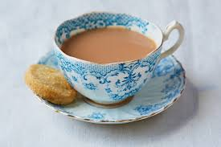

Tea

Description
Honestly spent far too long on listing ingredients for other recipes, I've picked this one because it's mich shorter!
That said, I also really love a strong cuppa so it's nice to get that out there
Ingredients
- A teabag
- Boiling water
- A dash of milk (or more, if you're not making it for me)
Steps
- Fill the kettle with enough water for your size of cup/mug, and set to boil
- Pop a teabag in your cup
- Pour your boiling water into the cup until it's almost full
- Leave to brew for 3-4 minutes
- Remove the teabag, and add a dash of milk (or, if not making it for me, to taste)